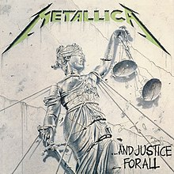

And Justice for All is the fourth studio album by American heavy metal band Metallica, released on August 25, 1988, by Elektra Records.
If you wanna know more about the band, enter the Metallica Offical Website
The album was acclaimed by music critics for its depth and complexity, although its dry mix and nearly inaudible bass guitar were criticized. It was included in The Village Voice's annual Pazz & Jop critics' poll of the year's best albums, and was nominated for a Grammy Award in 1989, controversially losing out to Jethro Tull in the Best Hard Rock/Metal Performance Vocal or Instrumental category. The single "One" backed the band's debut music video, and earned Metallica their first Grammy Award in 1990 (and the first ever in the Best Metal Performance category). It was successful in the United States, peaking at number six on the Billboard 200, and was certified 8× platinum by the Recording Industry Association of America (RIAA) in 2003 for shipping eight million copies in the U.S.
And Justice for All was recorded from January to May 1988 at One on One Recording Studios in Los Angeles. Metallica produced the album with Flemming Rasmussen.[9] He had been initially unavailable for the planned start on January 1, 1988, and the band hired Mike Clink, who had caught their attention for producing the debut Guns N' Roses album Appetite for Destruction (1987). Plans deteriorated, and Rasmussen became available three weeks after drummer Lars Ulrich had first called him. Rasmussen listened to Clink's rough mixes for the album on his February 14 flight to Los Angeles, and upon his arrival, Clink was fired. Hetfield explained that recording with Clink had been problematic, and Rasmussen was a last-minute replacement.[10] Clink is credited with engineering drums on "The Shortest Straw" and "Harvester of Sorrow". Awaiting Rasmussen's arrival, the band had recorded two cover songs—"Breadfan" and "The Prince"—to "fine‑tune the sound while they got into the studio vibe".[10] Both were released as B-sides for singles from the album and were later included on the 1998 cover album Garage Inc.